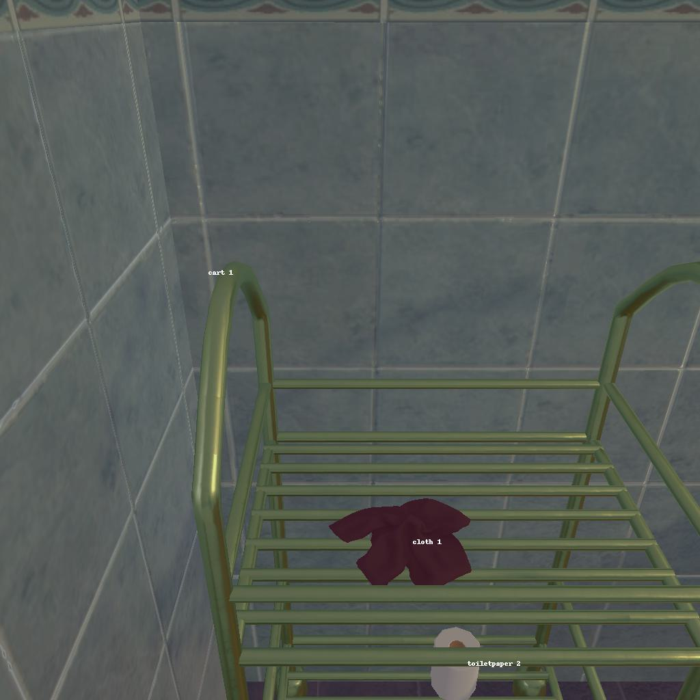

---------------------------------------------------------task: 25---------------------------------------------------------
--------------------------------------------------------------------------------------------------------------------------------------------------------------------
--------------------------------------------------------------------------------------------------------------------------------------------------------------------
Step:--------------------------------------------------------------------------12-------------------------------------------------------------------------------
----------------------------------------
VLM Prompt:
Image1:
Image2:
**Instruction**
1. Analyze the provided image to identify all visible household objects, focusing on those relevant to the task description "put two dishsponge in cart."
2. Use the analysis of the image and the task hint "The agent must find an object of the desired type, pick it up, find the correct location to place it, put it down there, then look for another object of the desired type, pick it up, return to previous location, and put it down there with the other object." to answer the question: what is the most reasonable action in the choices for the task description "put two dishsponge in cart"?
4. Decide and write the answer using the template: The answer is: (i): , where i is the real number. If there is no desired object in the image, search every place based on **Initial Observation** to find the object. And if no one is exactly correct, choose a similar answer.
**Initial Observation**
You are in the middle of a room. Looking quickly around you, you can see bathtub (1), bathtubbasin (1), cart (1), toilet (1), garbagecan (1), toiletpaperhanger (1), shelf (1-4), sink (1), sinkbasin (1), handtowelholder (1)
**Answer Choices**
(1): go to bathtub 1
(2): go to bathtubbasin 1
(3): go to toilet 1
(4): go to garbagecan 1
(5): go to toiletpaperhanger 1
(6): go to shelf 1
(7): go to shelf 2
(8): go to shelf 3
(9): go to shelf 4
(10): go to sinkbasin 1
(11): go to handtowelholder 1
(12): take faucet 1 from sink 1
(13): take toiletpaper 2 from sink 1
(14): take soapbar 2 from sink 1
(15): examine sink 1
**Answer**
Let's think step by step by following the instructions.
----------------------------------------
----------------------------------------
Original Response:
First, we need to identify if there are any dish sponges visible in the images provided. In Image 1 and Image 2, there is no object labeled as "dishsponge." Since the task is to put two dish sponges in the cart, we need to find where the dish sponges could be located based on the initial observation.
The initial observation mentions a list of places to look around in the room. Since dish sponges are typically found near a sink or cleaning supplies area, we should look in places related to that.
None of the answer choices directly point to a dish sponge, but we can make an educated guess based on the typical location of such items. The closest related locations in the answer choices are the sinkbasin and the shelf, as these are common places to store cleaning items like dish sponges.
Since the sink is visible in Image 2 and there is no dish sponge there, the next logical step would be to check the shelves. Out of the four shelves, any could potentially hold a dish sponge, but since we have no specific information on which shelf it would be, we should start with the first one and work our way through.
The answer is: (6): go to shelf 1
----------------------------------------
----------------------------------------
>>> Refine Original VLM Response and Get Pure Action: go to shelf 1
----------------------------------------
-----------------------------------------------------------------
Running time: 10.768172264099121 seconds
Total Money: 12.581770000000002
-----------------------------------------------------------------
-----------------------------------------------------------------
Text Observation:You arrive at loc 6. On the shelf 1, you see a papertowelroll 1, a toiletpaper 1, and a soapbar 1.
-----------------------------------------------------------------
UNSUCCEED